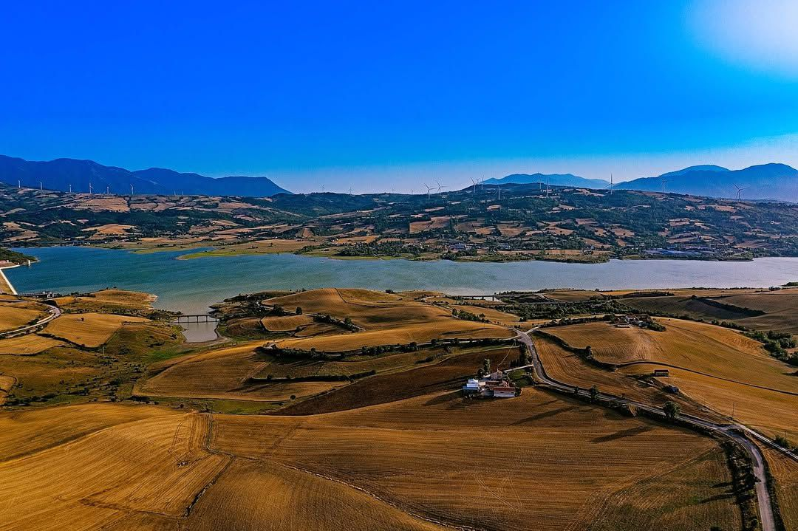
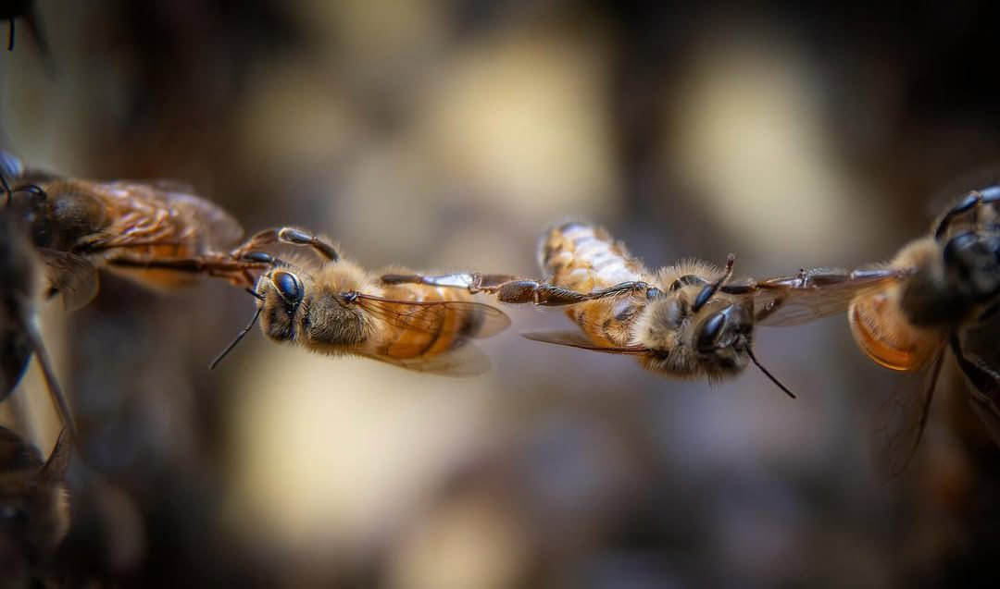

40°52'N · 15°18'E · 650 m s.l.m.
Un luogo preciso
su una mappa
L'Oasi WWF di Conza della Campania non è uno sfondo. È il motore di ogni cosa che facciamo. Argille, acque, fioriture selvatiche, vento appenninico — ogni elemento di questo paesaggio finisce dentro i nostri vasetti.
Il bacino artificiale
Il Lago di Conza della Campania:
un'opera d'ingegneria
diventata natura
Costruito negli anni Ottanta come invaso artificiale sul fiume Ofanto, il Lago di Conza ha nel tempo trasformato un'area agricola in un ecosistema straordinario. L'acqua ha richiamato la vegetazione ripariale, la vegetazione ha chiamato gli insetti, gli insetti hanno chiamato le api.
Oggi il lago è il centro di gravità di un corridoio ecologico che collega l'Appennino Lucano al Sele. Le rive ospitano canneti, saliceti e prati umidi — ambienti ideali per specie come la natrice tassellata, il falco pescatore, l'airone cenerino. E per le nostre api: l'umidità lacustre crea microclimi di fioritura unici.
Il lago regola le stagioni del miele. La massa d'acqua ammorbidisce le gelate primaverili, prolunga le fioriture estive, crea un gradiente termico che favorisce la raccolta tardiva. Non si trova in nessun disciplinare di produzione — eppure è il vero segreto dei nostri cru.

Il suolo che parla nel miele
Le argille irpine:
perché il nostro miele
ha quel carattere
I suoli intorno a Conza sono prevalentemente argillosi — rimanenze del fondo del mare del Miocene, emerse con l'orogenesi appenninica. Questa argilla è responsabile di due cose fondamentali per i nostri mieli: trattiene l'umidità nei periodi di siccità estiva, permettendo alle piante mellifere di fiorire più a lungo; mineralizza le piante che vi affondano le radici.
Il Miele di Sulla — la nostra produzione più rara — è un caso di studio in questo senso. La Hedysarum coronarium è una leguminosa che si adatta perfettamente ai suoli pesanti, e assorbe il minerale argilloso restituendolo come una lieve nota erbaceo-salina nel miele. Un carattere impossibile da replicare altrove.
Ecco perché parliamo di miele cru: come un vino di territorio, il suolo è un ingrediente attivo, non uno sfondo passivo.

Il nostro terroir su mappa
Dove nasce il miele
L'ecosistema del miele
Biodiversità come garanzia di qualità
Un ecosistema sano produce un miele complesso. Le api di Priscilla non hanno un monocultura davanti — hanno un paesaggio. Ogni pianta che fiorisce aggiunge una sfumatura, ogni insetto che vola è un indicatore di equilibrio. Ecco i principali attori botanici e faunistici del nostro territorio.
Sulla (Hedysarum coronarium)
Leguminosa annuale che fiorisce in maggio sui suoli argillosi. Fiori rosso-porpora ad alto contenuto di nettare. Rarissima fuori dall'area mediterranea occidentale. Base del nostro Cru delle Argille.
Monoflora raraRobinia Pseudoacacia
Originaria del Nord America, naturalizzata nei valloni umidi. Fioritura brevissima (8-12 giorni) ma nettarifera straordinaria. Il nettare produce un miele a cristallizzazione lentissima di eccezionale limpidezza.
Monoflora delicataMillefiori Selvatico
Trifoglio pratense, erba medica, sulla, centaurea, borragine, cisto, timo, origano. La complessità del nostro Millefiori dipende dal numero di specie: più alta la diversità floristica, più articolato il profilo aromatico.
Polifiora complessaAvifauna dell'Oasi
Falco pescatore, airone cenerino, mignattino piombato, martin pescatore, tarabusino. La presenza di specie ornitologiche sensibili è l'indicatore più attendibile della qualità ambientale dell'area: dove vivono loro, vivono bene anche le api.
Indicatori biologiciFauna Acquatica
Luccio, carpa, tinca, anguilla, gambero di fiume. La qualità dell'acqua del lago — monitorata dal WWF — è direttamente correlata alla salute degli habitat ripariali dove crescono le piante mellifere della zona umida.
Ecosistema lacustreImpollinatori Selvatici
Bombus terrestris, Osmia cornuta, farfalle Vanessa e Polyommatus. Le nostre Apis mellifera ligustica condividono il territorio con decine di specie di impollinatori selvatici — segnale di un ecosistema in salute e non compromesso.
ImpollinatoriIl ritmo del territorio
Le quattro stagioni del terroir
Il territorio non è statico. Cambia ogni stagione, e con esso cambia l'alveare, il miele, il lavoro dell'apicoltore. Questa è la mappa temporale del nostro anno.
Primavera
Marzo — Maggio
- Risveglio delle famiglie
- Fioritura di Sulla (maggio)
- Fioritura di Acacia (apr–mag)
- Prima smielatura dell'anno
- Ispezioni e sciamatura
Estate
Giugno — Agosto
- Raccolta Millefiori
- Fioriture tardo-estive (origano, timo)
- Smielatura principale
- Monitoraggio varroa
- Gestione calore alveare
Autunno
Settembre — Novembre
- Preparazione invernamento
- Scorte di miele per api
- Trattamenti antiparassitari
- Ispezione finale arnie
- Raccolta dati stagione
Inverno
Dicembre — Febbraio
- Cluster: api a riposo
- Manutenzione arnie
- Analisi e studi botanici
- Pianificazione stagione
- Comunicazione con waitlist
Il territorio in numeri
Cosa succede in un anno nell'apiario
Km di raggio — territorio battuto
Un'ape compie fino a 90.000 voli in una stagione, coprendo in media 3–5 km per raccolta. Il territorio effettivo dell'apiario Priscilla è un cerchio di ~25 km di raggio intorno a Conza — una delle aree più incontaminate dell'Irpinia.
Kg di miele per arnia — stagione buona
In anni con primavera favorevole e fioriture abbondanti, ogni arnia può produrre 60–80 kg. Anni di siccità o late frost scendono a 20–30 kg. Il micro-lotto è reale: la variabilità è parte del carattere cru.
Api per arnia al picco estivo
Un'arnia sana in estate conta 50.000–80.000 individui. Ogni ape operaia vive 6–7 settimane. L'alveare Priscilla è monitorato settimanalmente per garantire salute delle famiglie e densità ottimale per la raccolta.
Giorni di fioritura Acacia
La Robinia Pseudoacacia fiorisce per 8–12 giorni all'anno, e solo in quella finestra l'api raccolgono il nettare per il Miele di Acacia. Pioggia, vento o caldo anomalo possono ridurre la finestra a 5 giorni — azzerando la raccolta.
Questo territorio è nel vasetto
Ora che conosci il luogo,
conosci il miele
Ogni acquisto è un'istantanea geografica: un terroir specifico, un'annata precisa, un ecosistema che ha lavorato per te. Scopri i nostri mieli cru disponibili.